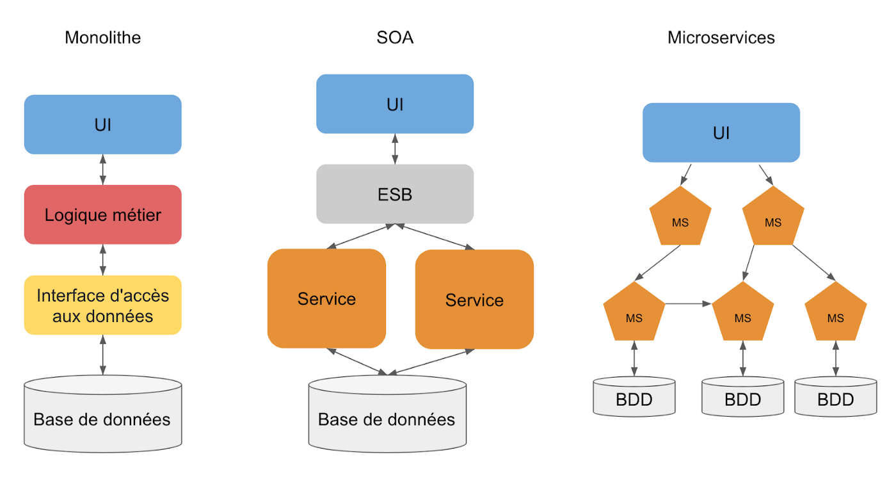

Microservices
- Nicolas BERT
Introduction aux microservices en informatique
Dans ce MON, nous allons discuter du principe de microservices et plus particulièrement de son utilisation et implémentation en informatique.
Introduction
Quand on pense aux microservices, on pense premièrement à plein de petites structures bien organisées qui sont chacune responsable d'une fonctionnalité et destinée à fonctionner ensemble.
Cette organisation de "délégation" et de "répartition" du travail n'est clairement pas anodine. On retrouve cette méthode de découpage à de nombreux niveaux. Par exemple, le gouvernement français est découpé en ministère et chaque ministère va s'occuper d'un domaine particulier (santé, justice, éducation, travail, intérieur ...) tout en fonctionnant les uns avec les autres. De même, lorsque l'on travail en équipe projet à Centrale chacun se répartit le travail et s'occupe d'une partie du projet tout en restant avertit du travail des autres. L'idée de cette répartition des tâches est de gagner en efficacité, clarté, organisation et performance. Ce concept se démocratise beaucoup et est devenu très populaire dans les projets IT.
Qu'est-ce qu'une architecture microservices ?
Le terme microservices est apparu en 2011 au cours d'ateliers d'architecture, bien qu'il réutilise un grand nombre de principes largement employés par les systèmes d'information des grandes entreprises, notamment les concepts de l'architecture orientée service (SOA). Le sujet est réellement évoqué à partir de 2014 selon Google Trends. Parmi les pionniers, on compte Netflix qui a oeuvré pour populariser ces architectures.
La philosophie de l'architecture en microservices s'inspire en grande partie de la philosophie UNIX qui prône "ne faire qu'une seule chose, et la faire bien". Il s'agit d'une méthode de développement logiciel qui a pour but de décomposer une application en fonctionnalités clés, chacune de ces fonctions est appelée "service". Chaque service est créé pour répondre à un besoin métier unique et précis. On peut citer par exemple : la gestion des utilisateurs, interface de paiement, envois de mails, sécurité, recherche, envois de notifications ... Par ailleurs, chaque service est indépendant et modulable, chacun peut fonctionner (ou dysfonctionner) sans affecter les autres. Les microservices indépendants communiquent les uns avec les autres en utilisant des API (REST la plupart du temps) indépendantes du langages de programmation. Cette catégorie d'architecture s'oppose aux architectures monolithiques qui sont construites comment une seule entité qui s'occupe de tout.
L'architecture en microservices permet aussi de restructurer les équipes de développement et la communication entre les services pour mieux se préparer aux inévitables pannes, mais aussi aux évolutions futures et à l'intégration de nouvelles fonctions.
Cette définition et ce découpage en service peut nous rappeler un type d'architecture assez similaire, l'architecture orientée services (SOA) qui est déjà bien établie.
Quelle est la différence entre une architecture SOA et une architecture microservices ?
Premièrement, les précurseurs des microservices identifient l'architecture en microservices comme une extension du concept de SOA, la plupart des principes de conception des microservices étaient déjà disponibles dans le monde de la SOA. Certains disent que "l'architecture microservices est une SOA bien conçue". Cependant, il y a tout de même des différences entre ces deux types d'architectures :
-
La taille : En microservices, comme le nom le laisse penser, la taille des services est beaucoup plus faible que celle des services en SOA. Chaque service a une seule responsabilité, alors qu'avec la SOA, les services peuvent englober plusieurs fonctions métiers.
-
La réutilisation : La SOA prône la réutilisation des composants sans se soucier du couplage et des interactions. En revanche en microservices, on essaie de minimiser la réutilisation du code puisque cela crée des dépendances. On privilégie donc un couplage faible quitte à dupliquer son code.
-
La communication : En SOA, la communication se fait à travers un "entreprise service bus" (ESB) de manière synchrone et cela introduit un point de défaillance critique qui est aussi une source de latence. En comparaison, dans une architecture microservices, chaque service est indépendant et par conséquent plus tolérant aux pannes. Cela peut être mis en place par exemple en faisant en sorte que chaque service soit à l'écoute des modifications des autres services.
-
La duplication des données : Un des objectifs de la SOA est de permettre à l'application d'avoir accès à toutes les données de manière synchrone et direct. En microservices, dans l'idéal, chaque service a accès seulement à toutes les données dont il a besoin même si cela implique de dupliquer les données et donc rajoute de la complexité.
On peut schématiser les différentes architectures de la manière suivante :
Quels sont les avantages et inconvénients d'une architecture en microservices ?
-
✅ Développement indépendant : Le découpage en service permet à chaque équipe d'utiliser les technologies qu'ils préfèrent et qui conviennent à la fonctionnalité gérée par le service et ne sont donc pas limités aux technologies imposés en début de projet.
-
✅ Déploiement indépendant : Chaque microservice est déployé de manière indépendante. Un service peut-être mis-à-jour sans a voir à redéployer l'application dans son entièreté, ce qui facilite donc la gestion des bugs et l'implémentation de nouvelles fonctionnalités. En opposition, dans une architecture monolithique, un bug peut mettre en péril l'application entière.
-
✅ Scaling indépendant : Chaque service étant indépendant, il peut grandir et évoluer de manière indépendante pour s'adapter aux besoin sans dépendre des autres. On optimise alors les coûts et le temps puisqu'il n'est pas nécessaire de faire évoluer l'application entière comme ce serait le cas avec une application monolithique.
-
✅ Équipes ciblées : Cette organisation permet de répartir les équipes par service et facilite donc beaucoup de choses. L'arrivée de nouveaux membres est facilitée et la phase de compréhension du pojet est plus courte puisqu'il n'ya que le service à comprendre.
-
✅ Moins de code : Une application monolithique partage beaucoup de dépendances et l'ajout de fonctionnalités n'est pas aisé. En revanche, une architecture en microservices va séparer le code et minimiser les dépendances et ainsi faciliter le scaling.
-
✅ Isolation des données : Dans une architecture microservices, chaque service a accès de manière privée uniquement aux données dont il a besoin. Il est alors possible de mettre à jour le schéma de base de données sans impacter toutes l'application.
-
✅ Résilience : Avec une architecture microservices, on diminue grandement le nombre de défaillances critiques possibles. Lorsqu'un service tombe en panne, l'application entière ne cesse pas de fonctionner comme c'est le cas avec le modèle monolithique, le risque est donc diminué et c'est également vrai lors de l'ajout de nouvelles fonctionnalités. Les erreurs sont isolées et par conséquent plus simple a corriger.
-
✅ Avancées technologiques : Le découpage en service permet à chaque service de suivre indépendamment des autres les avancées technologiques et de les appliquer sans affecter l'application dans son entièreté. Les architectures Cloud et la conteneurisation avec Docker notamment rendent la mise en place d'une architecture microservices beaucoup plus simple.
-
❌ Complexité : Même si chaque service en lui-même est assez simple, l'ensemble constitue un système distribué complexe.
-
❌ Tests : L'existence de nombreux services peut rendre plus difficile l'écriture de tests s'il y a des dépendances entre les services.
-
❌ Intégrité des données : Les microservices utilisent une architecture de base de données qui est distribuée (cloud) et l'intégrité des données n'est pas forcément assurée. Certaines fonctionnalités vont par exemple avoir besoin de mettre à jour plusieurs bases de données de plusieurs services, le tout doit être cohérent et fonctionnel.
-
❌ Latence du réseau : Le fait d'avoir de nombreux services va se traduire par une importante communication entre les services. Une latence du réseau va ralentir les communications et ce phénomène est accentué par les possibles chaînes de dépendances entre les services.
L'orchestration et la chorégraphie
Conseils et bonnes pratiques
Exemple de microservices
Il existe de nombreuses façons de découper un projet en microservices. Pour l'exemple uniquement, voici comment Amazon pourrait organiser une partie de son application en microservice. (Amazon fonctionne très probablement en microservices, mais le découpage que je propose est purement fictif)

Ici j'ai pris l'exemple de la recherche d'un article et de son achat sur Amazon. Chaque fonctionnalité représenté par un rectangle rouge pourrait être organisé comme un microservice.
- La barre de recherche
- Les suggestions d'articles (à l'aide d'algorithme se basant par exemple sur les précédentes visites de l'utilisateur, la période actuelle, sa localisation ....)
- La partie concernant la livraison (estimation des délais de livraison, retour de produits, gestion des stocks...)
- Le panier
- ...
Toutes ces fonctionnalités, qui sont externes au site (dans le sens où elles vont faire appel à des algorithmes externes et afficher seulement le résultat sur le site), peuvent être découpées et séparées en microservices. On peut évidemment pensez à d'autre fonctionnalités : paiement, évaluations des produits ...